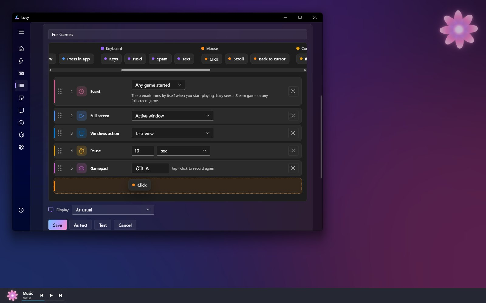
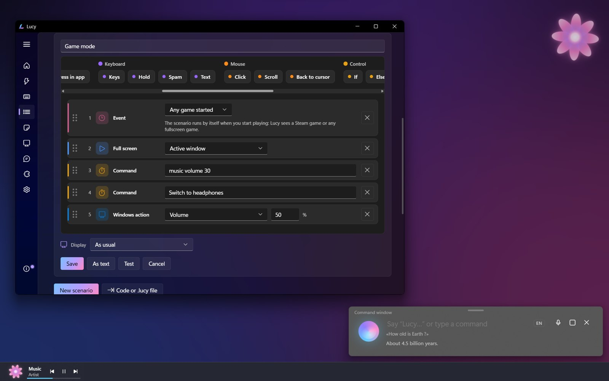

Руки заняты?
Просто скажи.
Lucy — голосовой помощник для Windows. Слышит тебя даже в игре, работает без интернета и делает то, что обычно делается мышкой через пять окон.
Живая речь, а не заученные фразы
Скажи «Люси» —
и готово.
«Громкость игры 30»игра тише, Discord как был
«Включи любимое»«Мне нравится» в Яндекс Музыке или Spotify
«Сделай скриншот»не отрываясь от игры
«Открой Дискорд»любая программа или сайт
«Таймер на 10 минут»напомнит голосом
«Какая погода завтра?»карточка с прогнозом
Приватность
голоса уходит в интернет. Имя и команды Lucy распознаёт прямо на твоём ПК.
Для игр
Сказал «щит» —
клавиши нажаты.
Голосовые макросы с профилями под каждую игру. Звук, окна, OBS и Discord — не сворачивая игру.

Сценарии
Десять действий.
Одна фраза.
Открыть, подождать, нажать, сменить звук, открыть ссылку — собери цепочку из блоков без кода.

Виджет
Прямо на панели задач.
Персонаж, музыка и громкость рядом с привычными кнопками Windows. Место выбираешь сам.

Персонаж
Видно, что она слушает.
Реактор, Цветок и другие облики показывают, когда Lucy слушает, думает и отвечает.

И это ещё не всё.
ИИ на выбор
Облачные модели по своему ключу или локальный ИИ прямо на ПК.
Только твой голос
Друг в Discord или чат стрима не выключат тебе игру.
Музыка голосом
Яндекс Музыка и Spotify: «включи бодрое», «следующий трек».
Пульт с телефона
Команды и кнопки Lucy, когда ты не за компьютером.
Быстрые команды
Любая программа, папка или сайт — на своё слово.
Русский и английский
Команды, интерфейс и голос Lucy — на двух языках.
Системные требования
Минимум
- Система
- Windows 10, 64-бит
- Процессор
- 4 ядра
- Память
- 4 ГБ
- Видеокарта
- не обязательна
- Место
- 1 ГБ
- Звук
- микрофон
Рекомендуется
- Система
- Windows 11
- Процессор
- 6 ядер
- Память
- 8 ГБ (16 ГБ для локального ИИ)
- Видеокарта
- 4 ГБ — для локального ИИ
- Место
- 3 ГБ + модели ИИ по желанию
- Звук
- гарнитура
Вопросы
Нужен интернет?
Нет. Имя и команды Lucy слышит на самом ПК. Интернет нужен только для облачного ИИ, погоды и музыки из сервисов.
Какие языки?
Русский и английский: и команды, и интерфейс, и голос Lucy. Язык выбирается при первом запуске.
Не будет мешать играм?
В тишине Lucy почти не нагружает процессор, а видеокарта по умолчанию остаётся игре. Макросы в играх с античитом — проверяйте правила игры.
Куда уходят мои данные?
Голос остаётся на ПК. Подробно — в политике конфиденциальности.
Lucy. Скоро в Steam.
Ранний доступ. Блогерам и каналам — ключи для обзора в пресс-ките.